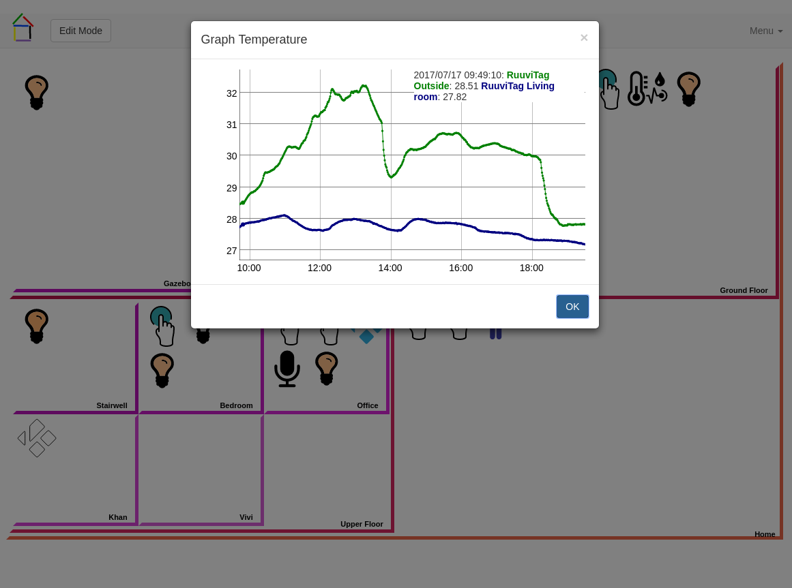

Introduction
AutoBuddy is a would-be home automation system written in his spare time by François Wautier. It is distributed under the MIT license.
This project was triggered by the purchase of a number of Lifx lightbulbs.
AutoBuddy consists in a number of pieces of software communicating via simple messaging bus. At this time, March 2017, it should be considered beta software. AutoBuddy requires Python 3.5 or above.
AutoBuddy's logo was designed by Khan Wautier.
Components
Buddylib
Buddylib is a python library that defines the element known to the AutoBuddy ecosystem. It defines zone, various devices as well as some generic bridge functionalities. Buddylib depends on SQLAlchemy.
ControlBuddy
ControlBuddy is at the heart of AutoBuddy. It multiplexes all the messages going in and out of the bus. It controls the zones and their associated devices. It provides persistence services to other components.
LifxBuddy
LifxBuddy is a bridge application that provides control to Lifx lightbulbs. It uses aiolifx to communicate with the lightbulbs.
FlicBuddy
FlicBuddy is a bridge application that provides access to Flic Smart Button. It uses aioflic and flicd, that can be found within fliclib-linux-hci to communicate with the buttons. FlicBuddy requires the exclusive use of a Bluetooth adapter. More than one BuddyFlic can run as long as they have different subtypes.
PresenceBuddy
PresenceBuddy is a bridge application that provides presence information based on devices' MAC addresses. It uses aioarping to track MAC addresses on your LAN and/or aiobtname to track Bluetooth MAC addresses. Tracking presence with Bluetooth is very reliable. Tracking presence using ARP request is much less reliable. We tested with LG G5, Samsung Galaxy 7, iPhone 4s, iPhone 7 all of them answered haphazardly to the ARP requests sent.
ActionBuddy
ActionBuddy is an application that processes events and act on them based on rules defined by the users. ActionBuddy also manages internal time events (granularity is 1 minute). ActionBuddy let the user define state variables and rules.
State variables can be of type:
- event
- Keep track of some event value (or part thereof)
- simple
- A way to share information between rules
- counter
- Similar to a simple variable, but with integer operations.
- tracker
- A way to track entities associated with specific events/values.
- time
- A way to define time intervals
Rules are defined by:
- A trigger
- An event/value or the resulting value of a state variable after an event.
- A list of conditions
- Each condition testing the value of a state variable.
- A list of commands
- A list of commands to be executed if all the condition have been met after the rule was triggerred.
ActionBuddy will process all events in the following way:
- Update all the state variables that the event should update,
- Check what rules are triggerred,
- Check that all the conditions are met for the rules triggerred,
- If all checks, execute the commands.
With ActionBuddy you can define rules that:
- Create a nice light show at sunset
- Toggle a light at the push of a flic
- Restore the state of your light after a power outage
- Turns light On/Off depending on the time of day and the presence/absence of people
- Send a Pushbullet message when a door is moved.
- Have your wife prepare you breakfast when you wake up..... Oh wait! That is not working yet.
- ...
Note that all rules, conditions and commands are evaluated in lexicographic order, to make sure they are evaluated in the required order you should prefix all the names used with 010, 020, 030, and so on.
Currently, ActionBuddy can send notifications using:
- Slack
- Pushbullet
- Pushover
VoiceBuddy
VoiceBuddy is AutoBuddy's voice recognition module. It uses Carnegie Mellon University's PockectSphinx.
VoiceBuddy allows you to define utterances and to trigger events when they are detected.
There is a configurable trigger utterance. By default it is listen buddy.
Whilst VoiceBuddy always uses PocketSphinx to detect the trigger utterance, it can be configure to uses other voice recognition engines:
- SimplePocketSphinx
- This version of pocket sphinx is the one used for detecting the trigger utterance. It uses a dictionary limited to the words defined in the various recognized voice commands. You can add words (like numeral for example) by listing them in a disabled voice command. This method is working very well and with little delay.
- PocketSphinx
- This uses the full dictionary that comes with PocketSphinx.
- It you set an API key, it will use Google Cloud Speech API, if no key is provided it will use the Google Speech Recognition API with no key. (Not sure I should...)
- Houndify
- Uses the Houndify engine. You need an id and key.
- Wit.ai
- Uses Wit.ai engines. You must setup your own application on their website, and get a key.
- IBM
- Uses IBM Watson Text-to-Speech engine. You must setup an account and get a key.
- Bing
- Uses Bing engine. You need an Azure account. This was not tested.
In general, to improve reliability, it is a good idea to use multi-syllables words when defining voice commands. Also try to separate similar sounding commands when possible. For instance, instead of "turn the lights on" and "turn the ligths off" use "turn on the lights" and "turn the light off". Another example, instead of "lock the door" and "unlock the door", use "do lock the door" and "unlock the door".
In general, be aware that voice recognition does not work very well in noisy environments.
VoiceBuddy uses a modified version of the python module speech_recognition.
VoiceBuddy requires an Internet connection when configuring it. When using the PocketSphinx engine it does not require an Internet connection.
Voice command can be parametrized by using "$$" in the phrase and "$1","$2", .... in the event value. For instance:
- Phrase
- play $$ songs by $$
- Event value
- kodi play song artist $2 count $1
When presented with the utterance "Play five songs by the beach boys", the phrase will match and send the value "kodi play song artist the beach boys count five"
This is currently not very useful since the rules cannot yet handle this.
In the gui, you can request VoiceBuddy the raw text-to-speech result, click on the icon and switch it on."
There is now a visual feedback to indicate that VoiceBuddy is actively trying to recognize speech.
SocketBuddy
SocketBuddy provides 2-way communication between websocket and the AutoBuddy bus. It serves WebBuddy and also provides login service to WebBuddy. It uses aiohttp Python library.
WebBuddy
WebBuddy is AutoBuddy web application. It enables the user, to create zones, associate devices with zone, send commands to the devices/zones, manage users, define rules, and so on.


WebBuddy depend on, among others:
- jQuery and jQuery-ui
- Bootstrap
- Bootstraps extensions: bootstrap-slider, bootstrap-switch, bootbox, ...
- BuddyWheel a SVG/Javascript colourwheel that is a sub-project of ours.

WebBuddy uses BuddyGuiLib to render all the command and configuration described in XML by each modules on the bus.
KodiBuddy
KodiBuddy is a bridge allowing AutoBuddy to interact with Kodi instances.
It currently offers the following functions
- Remote control
- A simple remote control available only as a device command.
- Player Commands
- A few, simple, player commands: play, pause, play/pause toggle, stop, next and, previous. Only available defining commands (e.g. in ActionBuddy).
- Play Album
- Play a random or a specific album. The album title can be specified. One can use "%" and "_" to represent "any string" and "any character respectively. The offset is to specify which one to select when more than 1 album meet the given title.
- Play Music
- Plays a set number of albums or songs. One can specify a music genre or more. (You can use "_" to supply multi-words genres)
- Play Song
- Play a random or a specific song. The song title can be specified. One can use "%" and "_" to represent "any string" and "any character respectively. The offset is to specify which one to select when more than 1 song meet the given title.
- Play Music Video
- Play a random or a specific music video. The music video title can be specified. One can use "%" and "_" to represent "any string" and "any character respectively. The offset is to specify which one to select when more than 1 music video meet the given title.
- Play Movie
- Play a random or a specific movie. The movie title can be specified. One can use "%" and "_" to represent "any string" and "any character respectively. The offset is to specify which one to select when more than 1 movie meet the given title.
- Power
- Turning the Kodi device power "On" or "Off". For "On" to work, the device must be configured to respond to "Wake-On-LAN" packets. By default the "Off" command tells the Kodi device to shutdown. One can configure the Kodi mudule to use "quit" for a specific device.
When the device if deemed "Off", only the power command is available as device command.
KodiBuddy talks to kodi devices using the JSON-RPC protocol over WebSocket.
ScannerBuddy
ScannerBuddy scans the network looking for Avahi/Bonjour services. It reports newly discoverd service, as well as known service where the IP address has changed. It can be asked for "known services" and can be asked to perform a scan for a specific service (e.g. _xbmc-jsonrpc._tcp.local.)
BLEBuddy
BLEBuddy monitors the bluetooth LE airwaves for advertised packets. It then uses plugins to decode the information and send it onto the AutoBuddy bus.
At this time (July 2017) there is a Ruuvi Tag plugin. It can decode the temperature, atmospheric pressure, huminidity, and accelerometer values. It will also decode battery information if present. The accelerometer can be calibrated. If you want to use Ruuvi Tag to detect movement, you should use an updated firmware, for instance this one, the sources are available in the ruuvi_tag repository.
Ctrl-click on the icon will show the current values of the sensors.
LoggerBuddy
LoggerBuddy allows you to persist values associated with events. The data can then be graphed by WebBuddy. For instance Ruuvi Tag temperature measurements.
To be graphed, data must be numerical or have at most 2 or 3 distinct values (for instance "on" and "off"). As long as they are displayed, graphs are updated in real time.
ThingsBoardBuddy
ThingsBoardBuddy allows you to persist values associated with events on ThingsBoard. The data can then be graphed. Here is an example. with data from RuuviTags and some lights. ThingsBoardBuddy uses CoAP.
I2CBuddy
I2CBuddy bridges I2C sensors. At this time (Oct 2017), there are 3 available plugins:
- BMP180: A sensor that can give you temperature in °C and atmospheric pressure in Pa,
- BH1750: A sensor that gives you luminosity in lux,
- HTU21D: A sensor that gives you temperature in °C and relative humidity in percent.
By default no plugin will run. Plugins must be enabled in the device configuration using WebBuddy.
I2CBuddy broadcast measurement events. The frequency of each measurement can be set in the configuration.
Ctrl-click on the icon will show the current values of the sensors.
WeMoBuddy
WeMoBuddy is a set of bridges to access Belkin's WeMo products. At this time switches (WeMoSwitchBuddy) and motion sensors (WeMoMotionBuddy) are supported.These bridges use the library aioouimeaux.
XiaomiBuddy
XiaomiBuddy is a bridge application that provides control to Xiaomi Yeelight lightbulbs. It uses aioxiaomi to communicate with the lightbulbs.
ConfigBuddy
ConfigBuddy is a an application use for the initial configuration of the system.
BuddyTools
BuddyTools is a set of tools that can be used to trigger event from other application. Currently there is:
- dhcp-event
- This tool is a PHP script that can be used with the dhcp server in dnsmasq to trigger
presence events based on dhcp lease events. It is a PHP script because I am using dd-wrt on my router and dd-wrt has a PHP interpreter but no
Python interpreter. It is used with the dhcp-script config option. Events send from this tool can be detected by PresenceBuddy even
when not using the ARPing method for presence. It generates dhcp events with as value a dictionary with
- status (online/offline)
- mac, the mac address
- ip, the ip address
- hostname
- apcupsd-event
- A python script meant to be used as powerout and mainsback scripts for apcupsd UPS monitoring daemon. It generates grid power events with value grid power on or grid power off
Others
As time goes by, many other components should appear here. For instance:
- LocationBuddy
- Locating people in specific zone
- HayoBuddy
- Support for Hayo
- ...
Documentation
Description of the messages and their function is somewhat documented on Google Drive. It is currently woefully outdated.
Status
End of October 2017
Added support for multiple speech-to-text engines in VoiceBuddy
October 2017
Added I2CBuddy.
June 2017
Added KodiBuddy and ScannerBuddy.
Module can now send specific devices information. The information can be accesses by Ctrl-Click'ing the device icon.
Added Location and RemoteControl widgets to buddyguilib.
In buddyguilib, a command can now be specified to appear only when defining actions (attribute rteffect not defined ot == 0), both when
defining actions and in the device's realtime command panel (rteffect == 1) or only in the device's realtime command panel (rteffect == -1)
In buddyguilib, appearance of commands in the device's command panel can be predicated to a state value with the onlyif attribute. For instance
to ensure that a command appears only if the device in "On" you can set onlyif="power::on" (Kodi) or onlyif="power::power::on" (Lifx).
onlyif is effective only when rteffect == 1 or -1
Device icons in WebBuddy can now be animated.
March 2017
System is soon to have its first release.
I have it installed on a Raspberry Pi 3 with 10 Lifx and 6 flics and I use it everyday. It just works.
Before release, I want to solve a couple of annoying bugs. I also want to add a location widget for BuddyGuiLib so that it is more convenient for people to set their location (needed for sunrise/sunset time) event though ConfigBuddy gets your location allright.
October 2015
System released on an unsuspecting world. Chaos may ensue.
The system is minimal. At this time we can
- Create zone
- Name zone
- Name device
- Associate devices with zone
- Control Lifx device (On/Off, Set Colour, Set White/Temperature
- On/Off devices in zone
- Manage users